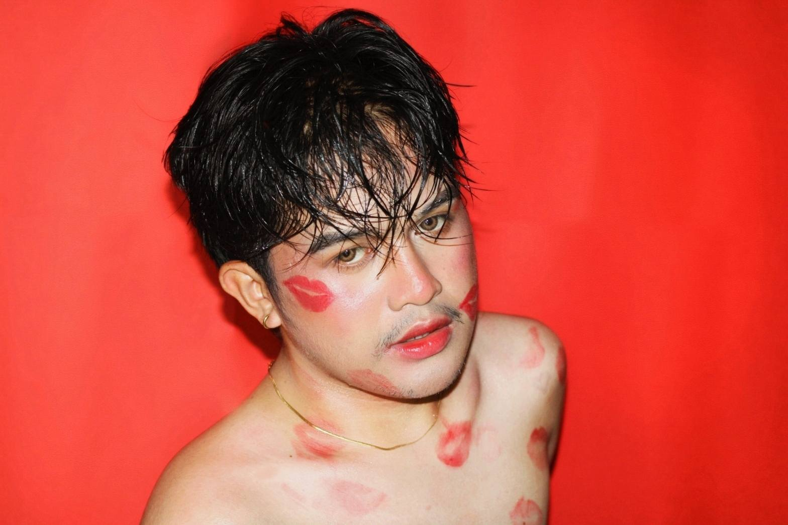
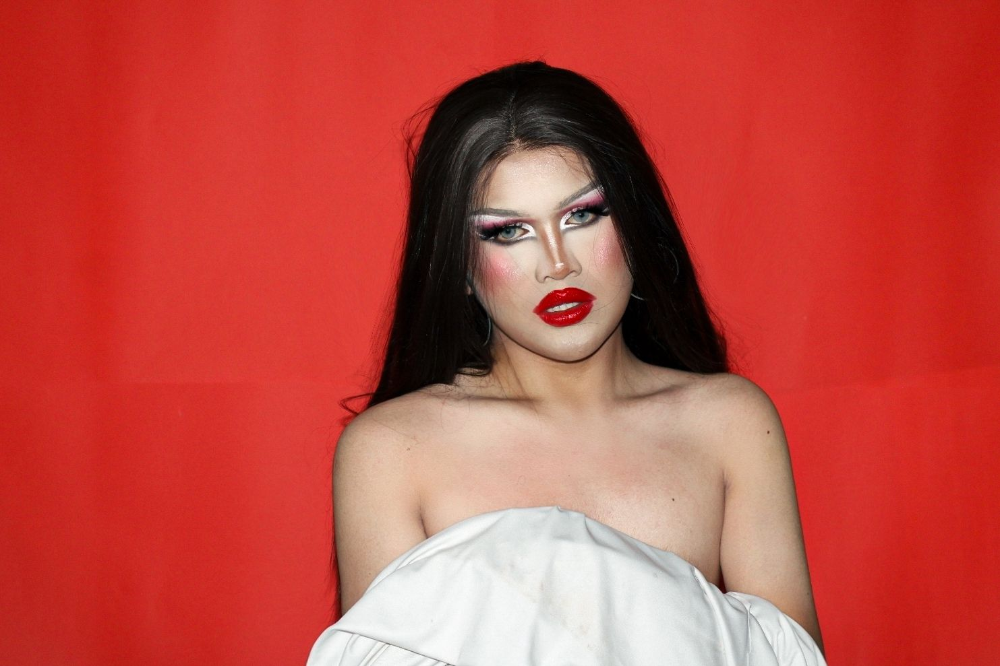

She’s sexy, confident, and unapologetically herself—lighting up every room and stage she steps onto. As the proud winner of Tikki Bar Resto in Medina, Xyndra has proven that hard work, heart, and authenticity truly shine the brightest

JAN MICHAEL
Jan Michael is a naturally charming and artistic individual whose cute and captivating presence makes him stand out wherever he goes. With a creative mind and a heart full of passion, he sees beauty in the smallest details and expresses himself through art, design, and imagination. His personality is a perfect blend of warmth, talent, and originality,
making him someone who not only catches your eye but also inspires you with his unique way of thinking and being.
IN DRAG
Me when doing drag makeup: transforming from a mere mortal into a glitter-drenched goddess, channeling confidence, creativity, and chaos all at once. It’s not just makeup—it’s a full-blown ritual of lashes, liner, and liberation. Every stroke of contour is a power move, every highlight a declaration of fabulousness. By the end, it’s not just a look—it’s a whole new persona, fierce, flawless, and ready to slay the stage or the sidewalk like it’s a runway.

XYNDRA
sexy, hot, and undeniably talented. With a magnetic stage presence and fierce energy, she commands attention the moment she steps into the spotlight. A true performer at heart, Xyndra's passion and skill have earned her the crown as the winner of Tikki Bar Resto in Medina, proving she’s not just a showstopper but a champion. Whether she’s dazzling the crowd with her moves, her style, or her sass, Xyndra leaves a trail of admiration and applause wherever she goes.
MORE ABOUT ME
Born on January 6, 2004, in Butuan City, Jan Michael, also known as Xyndra, is a captivating force of nature. Sexy, talented, and full of creativity, they effortlessly capture attention with their artistic flair and vibrant energy.
Xyndra dreams of becoming a famous drag queen, taking the stage in Drag Race Philippines, RuPaul’s Drag Race, and All Stars.